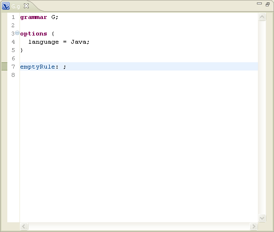
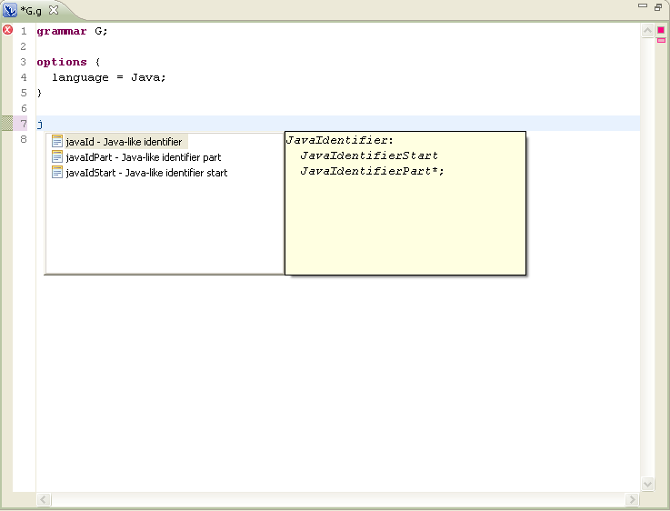
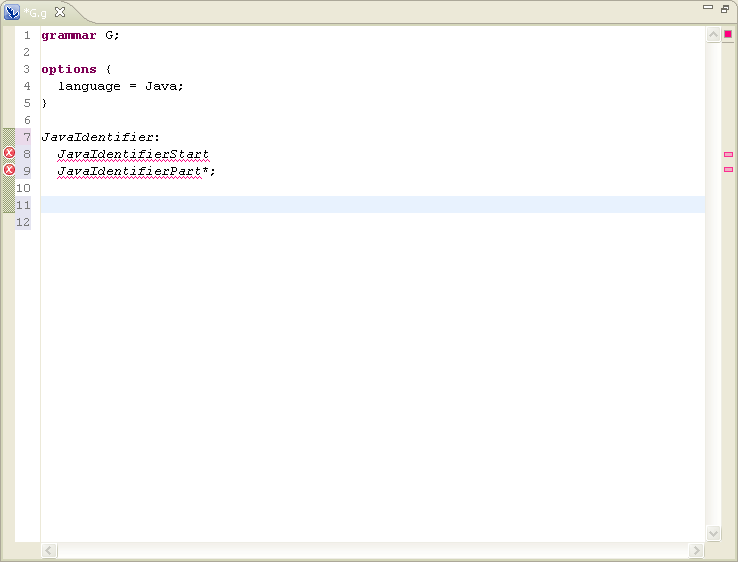
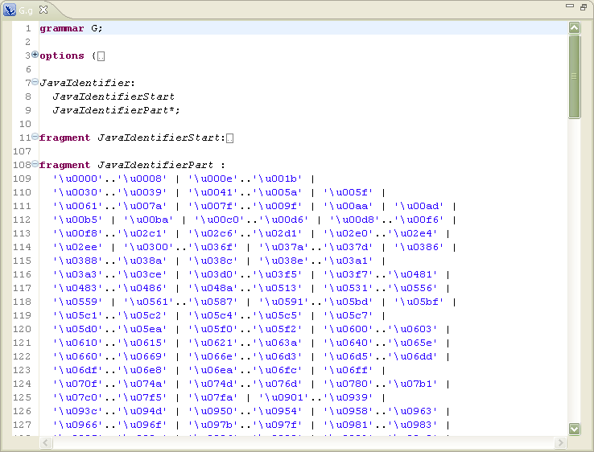

Using rule templates
In this section you will use content assist to create a Java like
identifier matching rule.
- Create a new grammar. For example: G.g. See creating your first grammar.

- Delete the rule "emptyRule"
- Press Ctrl+Space to activate the content
assist. The content assist window with a list of proposals will appear.
Scroll the list to see the available choices.
- Type "j" and select the template "javaId"


- Press Ctrl+Space, type "j" and select the "javaIdPart".
- Press Ctrl+Space, type "j" and select the "javaIdStart".

- Save the file.